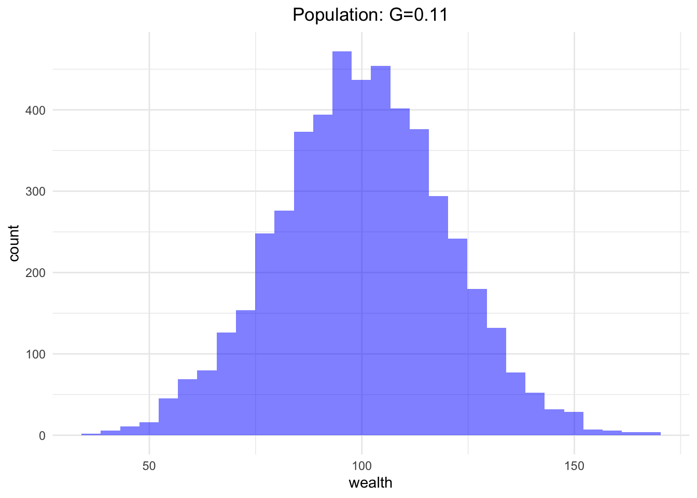

Code
[1] 104.55321 91.38377 132.08195 96.86375 96.57512 121.27153Pauline Kinzler
Questions:
[1] 104.55321 91.38377 132.08195 96.86375 96.57512 121.27153##Gini-Koeffizient
gini <- function(y) {
# Berechne den Gini-Koeffizienten für die Bevölkerung y
y <- sort(y) # Sortiere die Werte in aufsteigender Reihenfolge
n <- length(y) # Anzahl der Werte
numer <- 2 * sum((1:n) * y) # Zähler
denom <- n * sum(y) # Nenner
return ((numer / denom) - (n + 1) / n) # Gini-Koeffizient
}##Ausgabe des Gini-Werts für meine Population
gini_value <- gini(population)
# Ausgabe des Gini-Koeffizienten
gini_value[1] 0.1138885##Histogramm erstellen
# Erforderliche Bibliothek laden
library(ggplot2)
# Funktion zur Berechnung des Gini-Koeffizienten
gini <- function(y) {
y <- sort(y)
n <- length(y)
numer <- 2 * sum((1:n) * y)
denom <- n * sum(y)
return ((numer / denom) - (n + 1) / n)
}
# Funktion zur Erstellung des Histogramms
hist_custom <- function(population, label="pop", bins=30) {
# Berechne den Gini-Koeffizienten
gini_value <- round(gini(population), 2)
# Füge den Gini-Koeffizienten zur Beschriftung hinzu
label <- paste(label, ": G=", gini_value, sep="")
# Erstelle das Histogramm mit ggplot2
ggplot(data.frame(population), aes(x=population)) +
geom_histogram(bins=bins, fill="blue", alpha=0.5) +
labs(x="wealth", y="count", title=label) +
theme_minimal() +
theme(plot.title = element_text(hjust=0.5)) + # Zentriere den Titel
scale_x_continuous() +
scale_y_continuous()
}
# Beispielaufruf
set.seed(123)
N <- 5000
MU <- 100
population <- rnorm(N, mean=MU, sd=MU/5)
# Histogramm plotten
hist_custom(population, label="Population")
##Transaction
random_split <- function(A, B) {
# Nimm das gesamte Geld im Pot
pot <- A + B
# Teile es zufällig auf
share <- runif(1, min = 0, max = pot)
# Rückgabe des Anteils und des verbleibenden Geldes
return(c(share, pot - share))
}
# Beispielaufruf der Funktion
A <- 100
B <- 200
result <- random_split(A, B)
# Ausgabe des Ergebnisses
cat("Actor 1 gets:", result[1], "\n")Actor 1 gets: 93.17751 cat("Actor 2 gets:", result[2], "\n")Actor 2 gets: 206.8225 Randomly selected values: 3 and 8 ##Simulation---
title: "Assignment 2"
author: "Pauline Kinzler"
---
Questions:
1. What would be the smartest solution to share the code for my master’s thesis? Do the same thing? (new project, quarto, github etc. leading to a website and share the website)
At first I am defining the population we have in the beginning:
```{r}
##Anfangsdefinitionen
N <- 5000 # Größe der Population
MU <- 100 # Mittelwert der Population
# Population mit Normalverteilung erstellen
population <- rnorm(N, mean=MU, sd=MU/5)
# Optional: Einen Blick auf die ersten paar Werte werfen
head(population)
```
Now I'm creating the Gini-coefficient:
```{r}
##Gini-Koeffizient
gini <- function(y) {
# Berechne den Gini-Koeffizienten für die Bevölkerung y
y <- sort(y) # Sortiere die Werte in aufsteigender Reihenfolge
n <- length(y) # Anzahl der Werte
numer <- 2 * sum((1:n) * y) # Zähler
denom <- n * sum(y) # Nenner
return ((numer / denom) - (n + 1) / n) # Gini-Koeffizient
}
```
Then I want to know what the Gini-coefficient of my current population is:
```{r}
##Ausgabe des Gini-Werts für meine Population
gini_value <- gini(population)
# Ausgabe des Gini-Koeffizienten
gini_value
```
Now I'm plotting a histogram with the wealth on the x-axis and the number of people on the y-axis.
```{r}
##Histogramm erstellen
# Erforderliche Bibliothek laden
library(ggplot2)
# Funktion zur Berechnung des Gini-Koeffizienten
gini <- function(y) {
y <- sort(y)
n <- length(y)
numer <- 2 * sum((1:n) * y)
denom <- n * sum(y)
return ((numer / denom) - (n + 1) / n)
}
# Funktion zur Erstellung des Histogramms
hist_custom <- function(population, label="pop", bins=30) {
# Berechne den Gini-Koeffizienten
gini_value <- round(gini(population), 2)
# Füge den Gini-Koeffizienten zur Beschriftung hinzu
label <- paste(label, ": G=", gini_value, sep="")
# Erstelle das Histogramm mit ggplot2
ggplot(data.frame(population), aes(x=population)) +
geom_histogram(bins=bins, fill="blue", alpha=0.5) +
labs(x="wealth", y="count", title=label) +
theme_minimal() +
theme(plot.title = element_text(hjust=0.5)) + # Zentriere den Titel
scale_x_continuous() +
scale_y_continuous()
}
# Beispielaufruf
set.seed(123)
N <- 5000
MU <- 100
population <- rnorm(N, mean=MU, sd=MU/5)
# Histogramm plotten
hist_custom(population, label="Population")
```
now I'm defining the way a transaction works or what happens when two people meet:
```{r}
##Transaction
random_split <- function(A, B) {
# Nimm das gesamte Geld im Pot
pot <- A + B
# Teile es zufällig auf
share <- runif(1, min = 0, max = pot)
# Rückgabe des Anteils und des verbleibenden Geldes
return(c(share, pot - share))
}
# Beispielaufruf der Funktion
A <- 100
B <- 200
result <- random_split(A, B)
# Ausgabe des Ergebnisses
cat("Actor 1 gets:", result[1], "\n")
cat("Actor 2 gets:", result[2], "\n")
```
now I'm defining how the interaction works, how two people are chosen to meet up:
```{r}
##Interaction
anyone <- function(N) {
# Wählt zufällig zwei eindeutige Werte aus dem Bereich 0 bis N-1
return(sample(0:(N - 1), 2))
}
# Beispielaufruf der Funktion. N wurde oben schon definiert
result <- anyone(N)
# Ausgabe des Ergebnisses
cat("Randomly selected values:", result[1], "and", result[2], "\n")
```
Now I'm replicating the simulation:
```{r}
##Simulation
step <- function(population, transaction = random_split, interaction = anyone) {
# Wählt zwei zufällige Akteure aus
indices <- interaction(length(population))
i <- indices[1]
j <- indices[2]
# Modifiziere die Bevölkerung durch eine Transaktion
population[c(i, j)] <- transaction(population[i], population[j])
# Rückgabe der modifizierten Population
return(population)
}
```
```{r}
simulate <- function(population, T, transaction = random_split, interaction = anyone) {
# Kopiere die Population, um Änderungen daran vorzunehmen
population <- population
# Erster Zeitschritt: Ausgabe der anfänglichen Population
result <- list()
result[[1]] <- population
# Simuliere T Transaktionen
for (t in 1:T) {
population <- step(population, transaction, interaction)
result[[t + 1]] <- population
}
return(result)
}
```
```{r}
# Beispiel: population, random_split, anyone müssen definiert sein. und N und population auch
# Simulation mit T = 5 Schritten
result <- simulate(population, T = 5)
# Ausgabe der Population nach jedem Schritt
for (t in 1:length(result)) {
cat("Zeitpunkt", t - 1, ":", result[[t]], "\n")
}
```
Now I'm replicating the visualization: That didn't work, it didn't show me any plots. I tried several alternatives, but one of them caused never ending error messages and made my laptop sweat and breathe very heavily so I got scared and stopped trying.
```{r}
library(ggplot2) # Für die Plots
library(dplyr) # Für Datenmanipulation
library(gridExtra) # Für mehrere Plots nebeneinander
show <- function(population, k=40, percentiles=c(1, 10, 50, 90, 99), ...) {
N <- length(population)
start <- sort(population) # Anfangspopulation sortieren
# Simulationsresultate aufzeichnen
results <- lapply(0:(k * N), function(t) {
if (t %% (N / 10) == 0) {
list(t=t, pop=sort(simulate(population, T=k*N, ...)[[t+1]]))
}
}) %>% Filter(Negate(is.null), .)
# Ausgabe der Statistiken
cat(sprintf(" t Gini stdev %s\n", paste(sprintf("%3d%%", percentiles), collapse=" ")))
cat(sprintf("------- ---- ----- %s\n", paste(rep("----", length(percentiles)), collapse=" ")))
fmt <- "%7d %.2f %.1f %s\n"
for (result in results) {
t <- result$t
pop <- result$pop
if (t %% (k * N %/% 10) == 0) {
data <- sapply(percentiles, function(pct) percent(pct, pop))
cat(sprintf(fmt, t, gini(pop), sd(pop), paste(data, collapse=" ")))
}
}
# Erstellung der Plots:
# Prozentil-Plot
times <- sapply(results, function(result) result$t)
percentile_plot <- ggplot() +
labs(title=paste(percentiles, collapse="/"), x="time", y="wealth") +
theme_minimal() +
lapply(percentiles, function(pct) {
line <- sapply(results, function(result) percent(pct, result$pop))
geom_line(aes(x=times, y=line, color=factor(pct)))
}) +
scale_color_discrete(name="Percentiles")
# Histogramme
hist_data <- data.frame(
value=c(start, population),
type=rep(c("start", "end"), each=N)
)
hist_plot <- ggplot(hist_data, aes(x=value, fill=type)) +
geom_histogram(position="identity", alpha=0.5, bins=30) +
labs(title="Histogram", x="wealth", y="count") +
theme_minimal()
# Geordnete Kurven
ordered_data <- data.frame(
order=1:N,
start=sort(start),
end=sort(population)
)
ordered_plot <- ggplot(ordered_data, aes(x=start, y=order)) +
geom_line(aes(color="start")) +
geom_line(aes(x=end, y=order, color="end")) +
labs(title="Ordered Curves", x="wealth", y="order") +
scale_color_manual(values=c("start"="blue", "end"="red")) +
theme_minimal()
# Plots anzeigen
print(percentile_plot)
print(hist_plot)
print(ordered_plot)
}
```